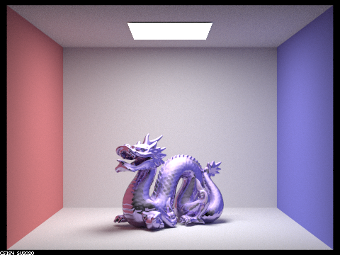

Project 1 Rasterizer
 link to page
link to page
A basic rasterization rendering pipeline that can draw out shapes stored in SVG files and draw them in colors or textures. Enables antialiasing through supersampling. We also explored how basic transformations like rotation, scale, and translation are represented by transformation matrices.
Project 3 Pathtracer

link to part 1
link to part 2
A 2 part project in which we built a fully functional renderer that can achieve photorealistic rendering for BRDF models.
In the first part, we constructed the basic functionalities for a ray-tracing renderer, which includes a ray intersection detection algorithm that tests if a generated ray intersects with a polygon and performs BRDF calculation when an intersection happens, a BVH that vastly increases the efficiency of said ray intersection detection, as well as a recursive ray generation that renders global illumination that has to bounce on objects before reaching the camera.
In the second part, we added some more complex BRDF materials to the renderer. This includes a transclucent material which not only reflects light on the outside of the object, but also allows rays to pass through after refraction; as well as a microfacet material, which we modelled as a partially reflective surface covered by randomly distributed irregularities.